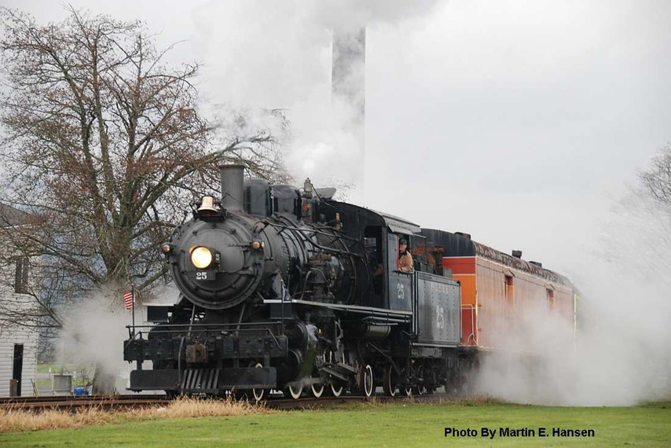

Last updated: 29 June, 2015
| Builder: | ALCO (Schenectady) |
| Build #: | 66435 |
| Date: | 10/1925 |
| Engine #: | 25 |
| Railroad: | McCloud River Railroad |
| Website: | Oregon Coast Scenic Railroad, www.oregoncoastscenic.org |
| Email: | |
| Location 1: | Garibaldi Depot: 306 American Ave, Garibaldi, OR 97118 Main Depot |
| GPS: | 45.558702, -123.911424. |
| Location 2: | Rockaway Beach Depot: 103 S. 1st Street Rockaway Beach, OR 97136 Depot only. Next door to the Rockaway Beach Chamber of Commerce |
| GPS: | 45.612782, -123.944204. |
| Location 3: | Wheeler Depot: 424 N Hwy 101, Wheeler, OR 97147 Depot only. Address is an estimate. |
| GPS: | 45.690082, -123.882059. |
| Phone: | 503-842-7972 |
| Status: | Operational |
| Notes: | From McCloud Railway Co., McCloud, CA. |
| Class: | |
| Gauge: | 4'-8½" |
| F.M.Whyte: | 2-6-2 |
| Drivers: | 46 |
| Gear Ratio: | |
| Tractive Effort: | 28,800 |
| Weight: | 144,000 |
| Weight on Drivers: | 100,000 |
| Length: | |
| Boiler: | |
| Cylinders: | 19x24 |
| Top Speed: | |
| Fuel: | |
| Fuel Type: | Oil |
| Water: | |
| Steam psi: | 180 |